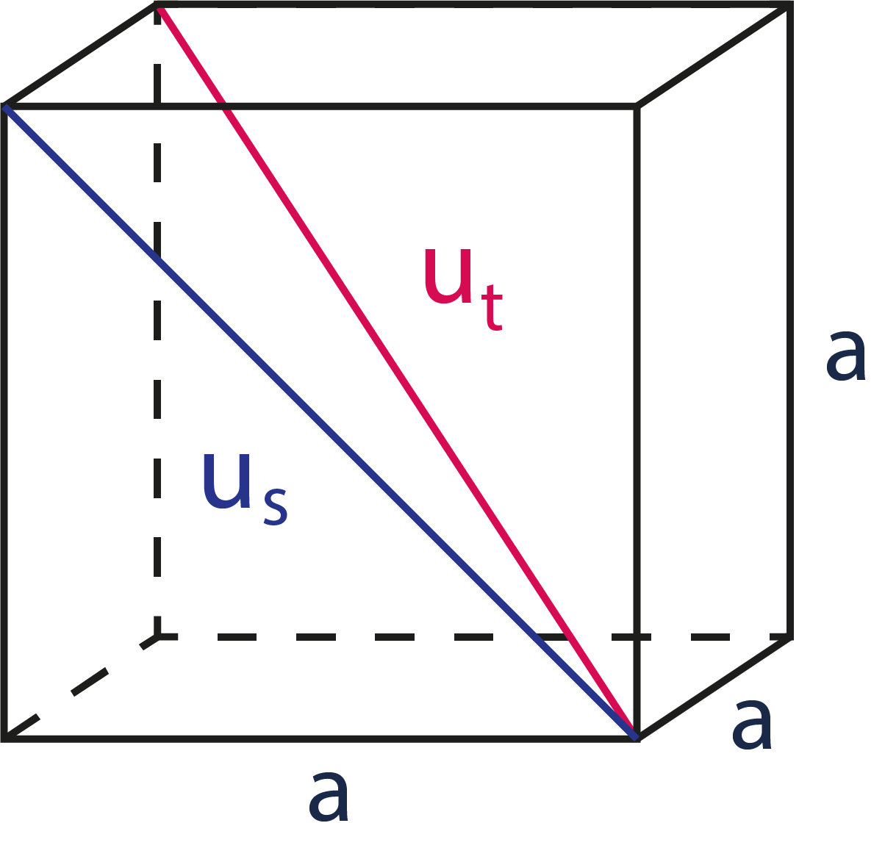

Povrch a objem krychle
Vlastnosti krychle
- Je tvořena šesti stejnými čtverci.
- Stěnové úhlopříčky jsou ve všech stěnách stejně dlouhé.
- Tělesové úhlopříčky jsou všechny stejně dlouhé.

Vzorečky
Obsah S = 6 * a * a = 6 * a2
Objem V = a * a * a = a3
Vysvětlivky
a = označení strany podstavy
us = stěnová úhlopříčka
ut = tělesová úhlopříčka
V = objem
S = povrch
Úhlopříčka spojuje dva různé vrcholy, které spolu nesousedí.
?
Kalkulace
Návod pro použití online kalkulačky pro výpočet objemu, nebo povrchu krychle:
- Zadejte hodnotu do políčka.
- V rozbalovacím menu zvolte jednotky, ve kterých chcete počítat.
- Klikněte na tlačítko Spočítat.
- Pro smazání historie výsledků stiskněte tlačítko Smazat historii počítání.